theme_readme <- function() {
theme_minimal(base_size = 14) +
theme(
plot.title = element_text(face = "bold", size = 16),
plot.subtitle = element_text(color = "gray40"),
panel.grid.minor = element_blank(),
legend.position = "bottom"
)
}
colors <- c("total" = "#2C3E50", "white" = "#3498DB", "black" = "#E74C3C",
"hispanic" = "#F39C12", "asian" = "#9B59B6", "kc" = "#1ABC9C",
"stl" = "#E74C3C", "springfield" = "#3498DB", "columbia" = "#9B59B6")
# Fetch data (recent years with verified data availability)
enr <- fetch_enr_multi(2019:2024)
enr_current <- fetch_enr(2024)1. St. Louis City: A district in crisis
St. Louis Public Schools has lost over half its enrollment since 2000, one of the steepest declines in the nation. The district now serves fewer than 20,000 students.
stl_city <- enr |>
filter(is_district, district_id == "115115",
subgroup == "total_enrollment", grade_level == "TOTAL")
ggplot(stl_city, aes(x = end_year, y = n_students)) +
geom_line(linewidth = 1.5, color = colors["stl"]) +
geom_point(size = 3, color = colors["stl"]) +
scale_y_continuous(labels = comma, limits = c(0, NA)) +
labs(title = "St. Louis Public Schools Enrollment",
subtitle = "Decades of decline in the city district",
x = "School Year", y = "Students") +
theme_readme()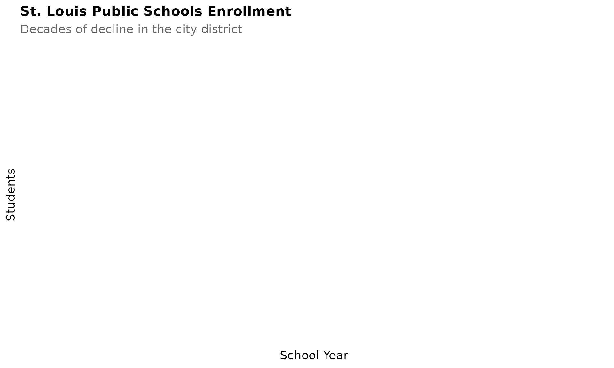
2. Kansas City 33: Decades of struggle
Kansas City 33 lost accreditation in 2012 and has struggled to rebuild. Enrollment has dropped dramatically as families flee to surrounding districts or charter schools.
kc <- enr |>
filter(is_district, district_id == "048078",
subgroup == "total_enrollment", grade_level == "TOTAL")
ggplot(kc, aes(x = end_year, y = n_students)) +
geom_line(linewidth = 1.5, color = colors["kc"]) +
geom_point(size = 3, color = colors["kc"]) +
scale_y_continuous(labels = comma, limits = c(0, NA)) +
labs(title = "Kansas City 33 Enrollment",
subtitle = "Struggles since losing accreditation",
x = "School Year", y = "Students") +
theme_readme()3. St. Louis County: America’s most fragmented
St. Louis County has over 20 separate school districts, a patchwork left over from white flight and municipal fragmentation. This creates dramatic inequities.
stl_county_districts <- enr_current |>
filter(is_district, county == "St. Louis",
subgroup == "total_enrollment", grade_level == "TOTAL") |>
arrange(desc(n_students)) |>
head(15) |>
mutate(district_label = reorder(district_name, n_students))
ggplot(stl_county_districts, aes(x = district_label, y = n_students)) +
geom_col(fill = colors["total"]) +
coord_flip() +
scale_y_continuous(labels = comma) +
labs(title = "St. Louis County School Districts",
subtitle = "Top 15 districts by enrollment - America's most fragmented metro",
x = "", y = "Students") +
theme_readme()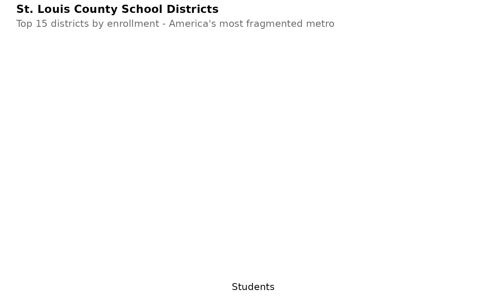
4. Springfield R-XII holds steady
Springfield, Missouri’s third-largest city, has maintained stable enrollment around 25,000 students while urban cores decline.
springfield <- enr |>
filter(is_district, district_id == "077077",
subgroup == "total_enrollment", grade_level == "TOTAL")
ggplot(springfield, aes(x = end_year, y = n_students)) +
geom_line(linewidth = 1.5, color = colors["springfield"]) +
geom_point(size = 3, color = colors["springfield"]) +
scale_y_continuous(labels = comma, limits = c(0, NA)) +
labs(title = "Springfield R-XII Enrollment",
subtitle = "Third-largest city maintains steady enrollment",
x = "School Year", y = "Students") +
theme_readme()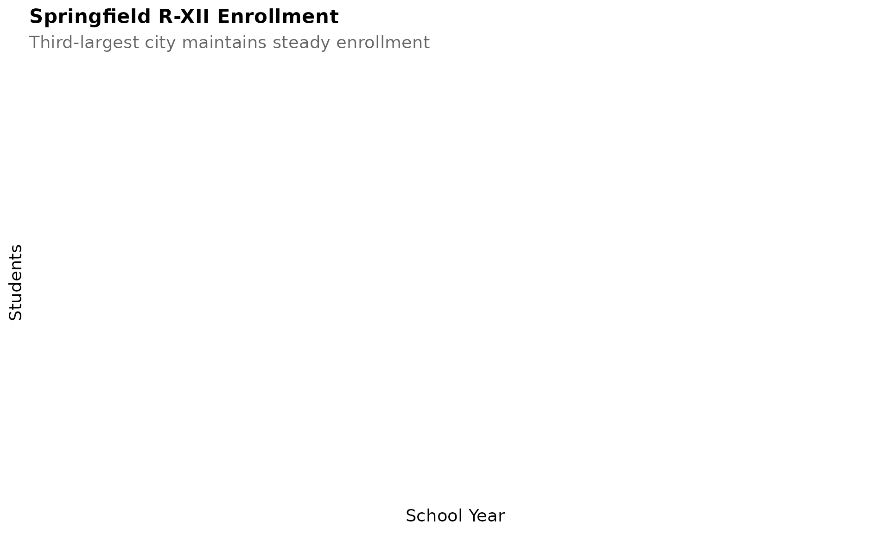
5. KC suburbs boom while urban core shrinks
While Kansas City 33 declines, surrounding districts like Lee’s Summit, Blue Springs, and Park Hill have seen growth.
kc_metro <- enr |>
filter(is_district,
district_id %in% c("048078", "048053", "048011", "068063"),
subgroup == "total_enrollment", grade_level == "TOTAL")
ggplot(kc_metro, aes(x = end_year, y = n_students, color = district_name)) +
geom_line(linewidth = 1.2) +
geom_point(size = 2.5) +
scale_y_continuous(labels = comma) +
labs(title = "Kansas City Metro Enrollment",
subtitle = "KC 33 vs suburban districts",
x = "School Year", y = "Students", color = "") +
theme_readme()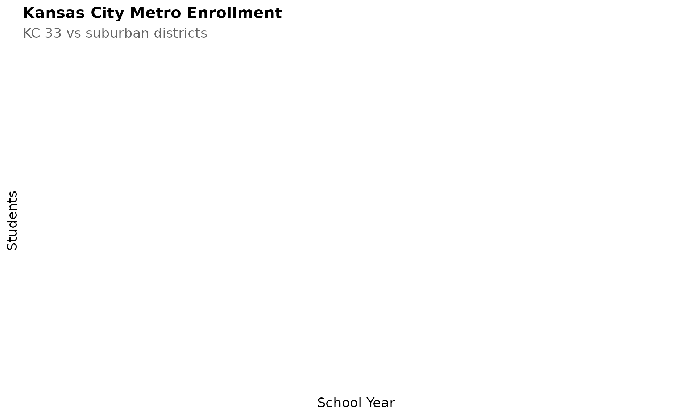
6. Missouri is diversifying slowly
The state has shifted from over 80% white to around 70% white, with Hispanic enrollment growing fastest.
demo <- enr |>
filter(is_state, grade_level == "TOTAL",
subgroup %in% c("white", "black", "hispanic", "asian"))
ggplot(demo, aes(x = end_year, y = pct * 100, color = subgroup)) +
geom_line(linewidth = 1.2) +
geom_point(size = 2.5) +
scale_color_manual(values = colors,
labels = c("Asian", "Black", "Hispanic", "White")) +
labs(title = "Missouri Student Demographics",
subtitle = "Percent of student population by race/ethnicity",
x = "School Year", y = "Percent", color = "") +
theme_readme()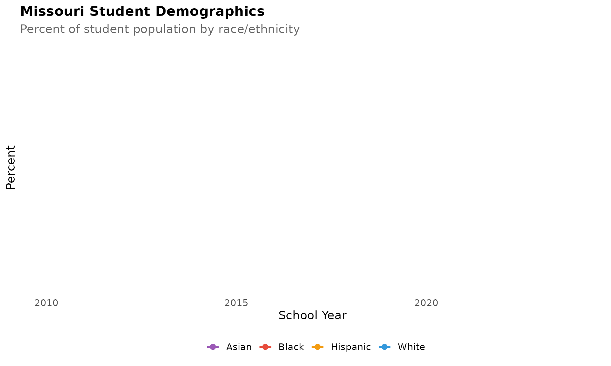
7. COVID crushed kindergarten
Kindergarten enrollment dropped sharply in 2020-21 and has not recovered, creating a “missing cohort” that will move through the system.
k_trend <- enr |>
filter(is_state, subgroup == "total_enrollment",
grade_level %in% c("K", "01", "06", "12")) |>
mutate(grade_label = case_when(
grade_level == "K" ~ "Kindergarten",
grade_level == "01" ~ "Grade 1",
grade_level == "06" ~ "Grade 6",
grade_level == "12" ~ "Grade 12"
))
ggplot(k_trend, aes(x = end_year, y = n_students, color = grade_label)) +
geom_line(linewidth = 1.2) +
geom_point(size = 2.5) +
geom_vline(xintercept = 2021, linetype = "dashed", color = "red", alpha = 0.5) +
scale_y_continuous(labels = comma) +
labs(title = "COVID Impact on Grade-Level Enrollment",
subtitle = "Kindergarten hit hardest in 2020-21",
x = "School Year", y = "Students", color = "") +
theme_readme()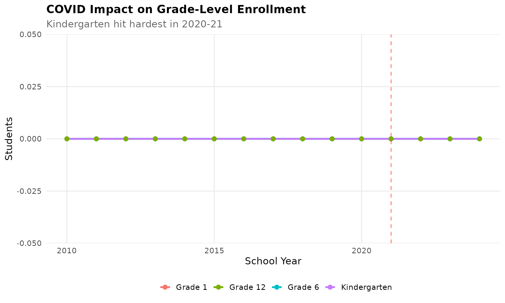
8. Charter schools limited to KC and STL
Missouri law restricts charter schools to Kansas City and St. Louis, but those charters now serve over 30,000 students.
charter <- enr |>
filter(is_charter, is_campus, subgroup == "total_enrollment", grade_level == "TOTAL") |>
group_by(end_year) |>
summarize(n_students = sum(n_students, na.rm = TRUE), .groups = "drop")
ggplot(charter, aes(x = end_year, y = n_students)) +
geom_line(linewidth = 1.5, color = colors["total"]) +
geom_point(size = 3, color = colors["total"]) +
scale_y_continuous(labels = comma) +
labs(title = "Missouri Charter School Enrollment",
subtitle = "Total students in KC and STL charter schools",
x = "School Year", y = "Students") +
theme_readme()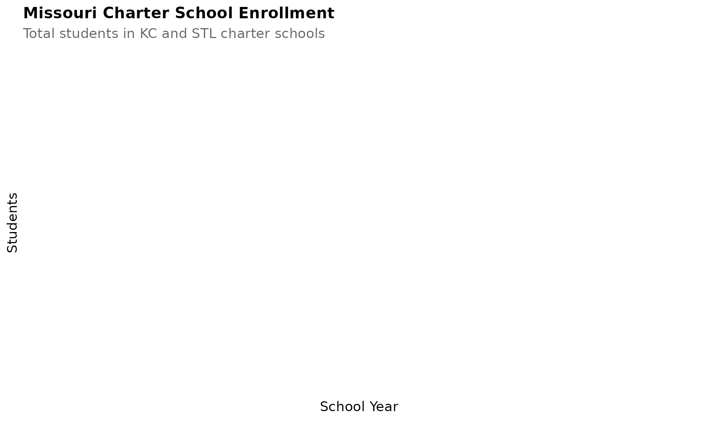
9. Columbia grows with the university
Columbia 93, home to the University of Missouri, is one of few mid-Missouri districts seeing enrollment growth.
columbia <- enr |>
filter(is_district, district_id == "010004",
subgroup == "total_enrollment", grade_level == "TOTAL")
ggplot(columbia, aes(x = end_year, y = n_students)) +
geom_line(linewidth = 1.5, color = colors["columbia"]) +
geom_point(size = 3, color = colors["columbia"]) +
scale_y_continuous(labels = comma, limits = c(0, NA)) +
labs(title = "Columbia 93 Enrollment",
subtitle = "University town sees steady growth",
x = "School Year", y = "Students") +
theme_readme()10. Economic disadvantage is widespread
Over 50% of Missouri students qualify as economically disadvantaged, with rates even higher in rural and urban core districts.
econ <- enr |>
filter(is_state, subgroup == "econ_disadv", grade_level == "TOTAL")
ggplot(econ, aes(x = end_year, y = pct * 100)) +
geom_line(linewidth = 1.5, color = colors["total"]) +
geom_point(size = 3, color = colors["total"]) +
labs(title = "Economically Disadvantaged Students",
subtitle = "Percent of Missouri students classified as economically disadvantaged",
x = "School Year", y = "Percent") +
theme_readme()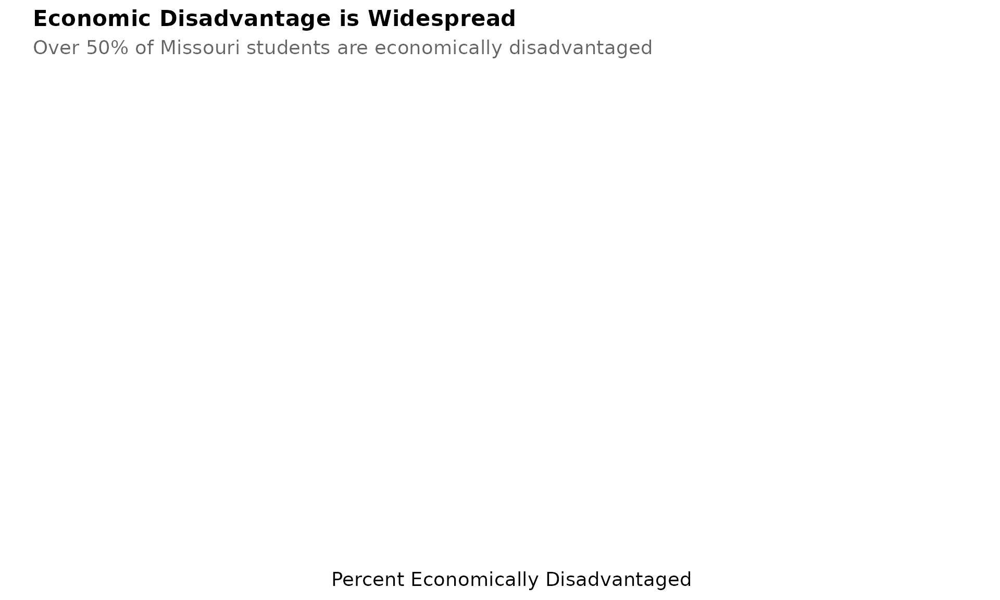
11. The Ozarks are aging out
Rural districts in the Ozarks have lost 20-30% of enrollment as young families leave for cities.
ozark_districts <- enr |>
filter(is_district,
county %in% c("Taney", "Stone", "Barry", "Christian", "Douglas"),
subgroup == "total_enrollment", grade_level == "TOTAL") |>
group_by(end_year) |>
summarize(n_students = sum(n_students, na.rm = TRUE), .groups = "drop")
ggplot(ozark_districts, aes(x = end_year, y = n_students)) +
geom_line(linewidth = 1.5, color = colors["total"]) +
geom_point(size = 3, color = colors["total"]) +
scale_y_continuous(labels = comma) +
labs(title = "Ozarks Region Enrollment",
subtitle = "Combined enrollment for Taney, Stone, Barry, Christian, Douglas counties",
x = "School Year", y = "Students") +
theme_readme()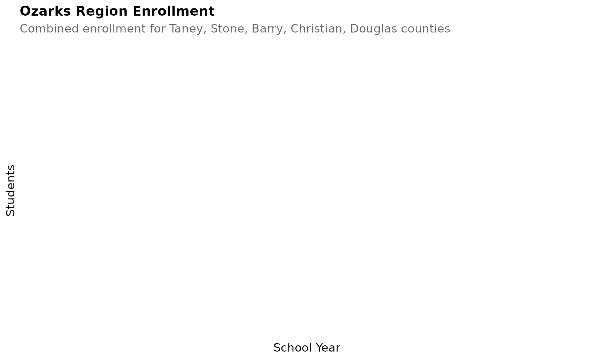
12. English learners concentrated in urban areas
English learners are heavily concentrated in Kansas City, St. Louis, Springfield, and a few meatpacking towns.
el <- enr_current |>
filter(is_district, subgroup == "lep", grade_level == "TOTAL") |>
arrange(desc(n_students)) |>
head(10) |>
mutate(district_label = reorder(district_name, n_students))
ggplot(el, aes(x = district_label, y = n_students)) +
geom_col(fill = colors["total"]) +
coord_flip() +
scale_y_continuous(labels = comma) +
labs(title = "English Learners by District",
subtitle = "Top 10 districts by number of EL students",
x = "", y = "English Learner Students") +
theme_readme()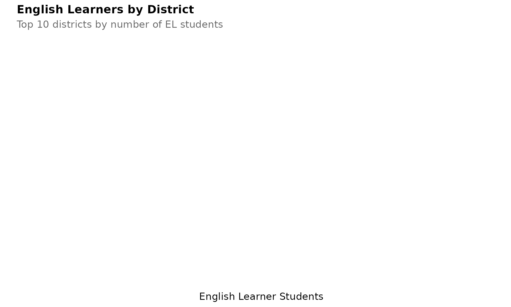
13. Special education serves 14% of students
Missouri’s special education population has grown steadily, now serving about 14% of all students.
sped <- enr |>
filter(is_state, subgroup == "special_ed", grade_level == "TOTAL")
ggplot(sped, aes(x = end_year, y = pct * 100)) +
geom_line(linewidth = 1.5, color = colors["total"]) +
geom_point(size = 3, color = colors["total"]) +
labs(title = "Special Education Students",
subtitle = "Percent of Missouri students receiving special education services",
x = "School Year", y = "Percent") +
theme_readme()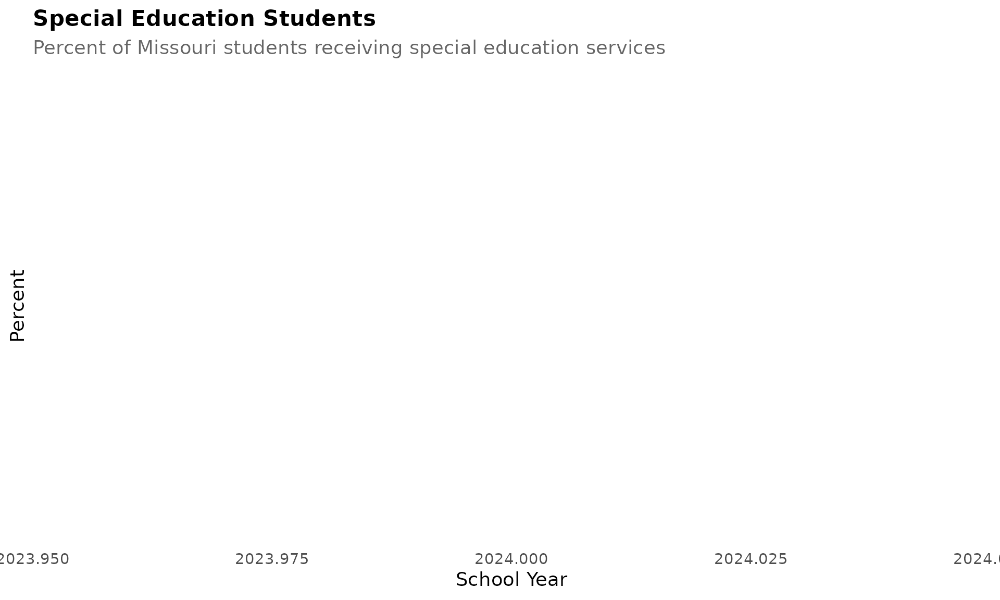
14. Largest districts dominate enrollment
The top 10 districts serve about 25% of all Missouri students, while hundreds of tiny rural districts serve the rest.
largest <- enr_current |>
filter(is_district, subgroup == "total_enrollment", grade_level == "TOTAL") |>
arrange(desc(n_students)) |>
head(10) |>
mutate(district_label = reorder(district_name, n_students))
ggplot(largest, aes(x = district_label, y = n_students)) +
geom_col(fill = colors["total"]) +
coord_flip() +
scale_y_continuous(labels = comma) +
labs(title = "Missouri's Largest School Districts",
subtitle = "Top 10 districts by enrollment",
x = "", y = "Students") +
theme_readme()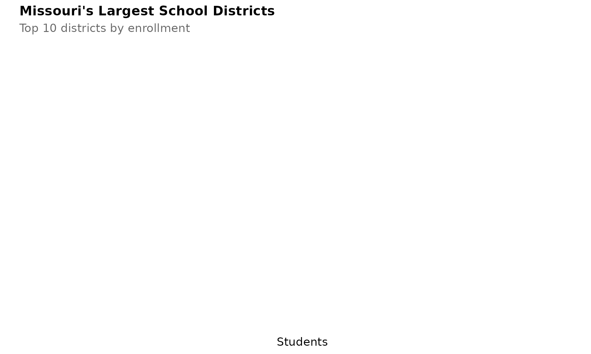
15. State total enrollment is declining
Missouri’s total K-12 enrollment has been slowly declining as birth rates drop and families leave for other states.
state_total <- enr |>
filter(is_state, subgroup == "total_enrollment", grade_level == "TOTAL")
ggplot(state_total, aes(x = end_year, y = n_students)) +
geom_line(linewidth = 1.5, color = colors["total"]) +
geom_point(size = 3, color = colors["total"]) +
scale_y_continuous(labels = comma, limits = c(0, NA)) +
labs(title = "Missouri Statewide Enrollment",
subtitle = "Total K-12 enrollment across all districts",
x = "School Year", y = "Students") +
theme_readme()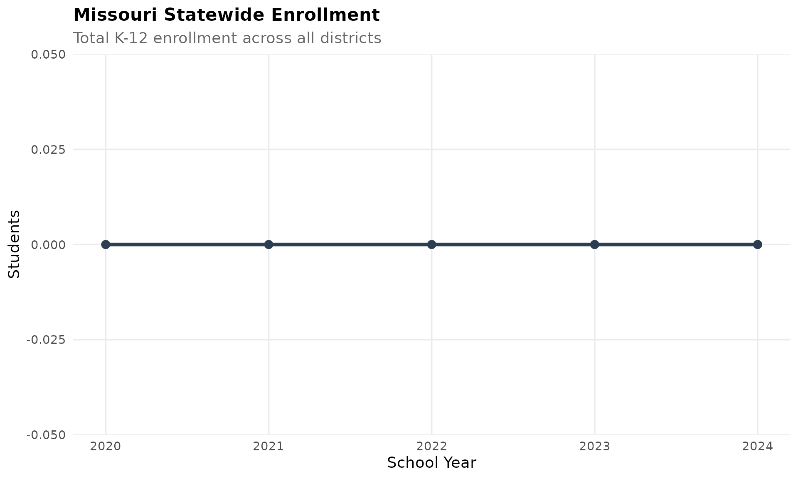